Advanced Dental Services Technology Hays
Quality Results Using the Latest Technology
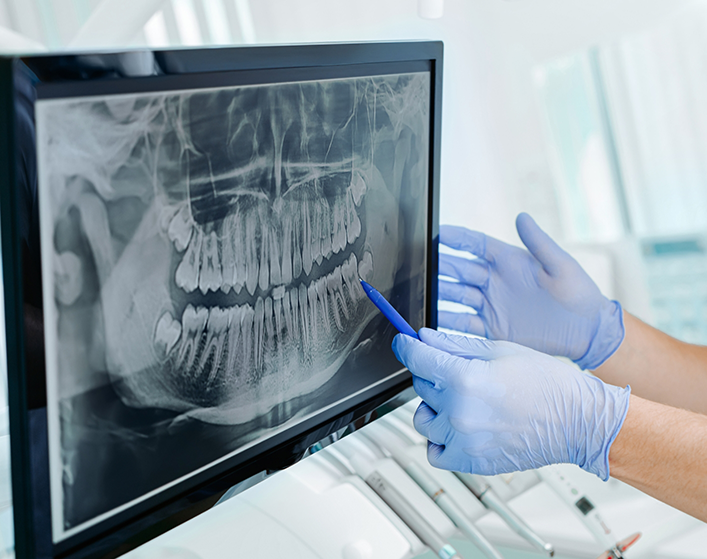
As part of our commitment to providing our patients with high-quality, comfortable care, Lifetime Dental Care features state-of-the-art dental technology. Our advanced devices allow our dentists to more effectively diagnose dental conditions and plan your treatments, ensuring a better result and a more comfortable procedure. We welcome you to contact our office at (785) 377-0479 to learn more about our advanced dental technology in Hays. Don’t forget to schedule your appointment with one of our experienced dentists.
Our Commitment to Outstanding Dentistry
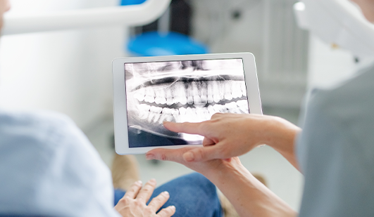
Our dentists and team are dedicated to continually providing you and your family with the highest level of care. We are committed to meeting all your dental needs and giving you a dental experience that is comfortable and pleasant. To help us achieve these goals, we are pleased to offer the benefits of state-of-the-art dental technology.
Dental technology includes a number of cutting-edge instruments, techniques, and materials that we use to ensure you receive quality results and gentle care. Our dentists and team have received the necessary training to utilize advanced dental technology to enhance your oral health.
Each of our different types of dental technology has its own benefits, and we invite you to continue browsing our website and contact our practice to learn more. We look forward to hearing from you soon!
3D Cone Beam CT Imaging
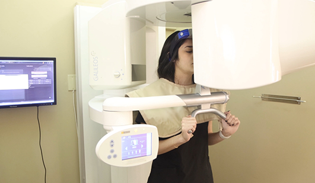
Our team uses cone beam CT imaging to capture high-quality, 3D images of your entire jaw structure, helping us to plan more effective treatments. Call (785) 377-0479 today to learn more about the benefits of 3D imaging in Hays and to make your appointment with Lifetime Dental Care.
Cone beam 3D imaging is effective for diagnosing and evaluating dental conditions, as well as planning treatments. One of the advantages of 3D cone beam technology is that it provides our dentists and team with a view of your mouth and supporting structures that is more comprehensive than digital X-rays.
How We Use 3D Cone Beam CT Imaging
At our office, we are committed to utilizing advanced dental technology to always provide you with the highest level of dental care. We are proud to utilize cone beam 3D imaging technology at our practice. Cone beam 3D technology is an imaging system that provides our dentists and team with a three-dimensional image reconstruction of your teeth, mouth, jaw, neck, ears, nose and throat. We may use dental cone beam 3D imaging to:
- Plan dental implant placement
- Evaluate the jaws and face
- View the head and neck as a comprehensive whole
- Diagnose tooth decay (cavities) and other dental problems
- Detect endodontic problems and plan root canal therapy
- Analyze dental and facial trauma
- Plan and evaluate the progress of orthodontic treatment
- Visualize abnormal teeth
Intraoral Camera
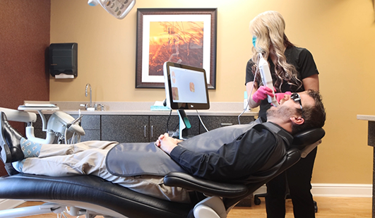
An intraoral camera is a tool we use to get a closer look at different parts of your smile. The intraoral camera is a small, pen-shaped device that we can use to take high-quality color photos of your teeth and gums, as well as other areas of your mouth as needed. Because the intraoral camera is so small and easily maneuverable, we can use it to see angles in your mouth that we cannot easily view with the unaided eye.
Detection & Education with the Intraoral Camera
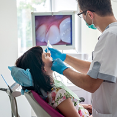
We may utilize the intraoral camera to better evaluate your oral health and diagnose dental problems like tooth decay and periodontal disease, as well as tooth damage like a cracked or chipped tooth. The intraoral camera is also useful in following up after a treatment has been completed.
In addition to helping our team get a better view of your smile, the images taken with the intraoral camera allow you to gain a better understanding of your oral health and dental treatments. We can also send these photos to other dentists and specialists and can submit them to dental insurance companies as needed. To learn more about the uses and benefits of intraoral cameras, we invite you to call or visit our dentists and team soon.
iTero® Digital Scanning
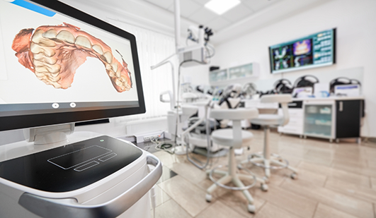
Our office uses iTero digital scanning to view three-dimensional images of the inside of your mouth. iTero digital imaging is a state-of-the-art technology that captures high-quality images of your teeth and supporting structures, making it easy for our dentists and team to diagnose problems and provide effective treatments.
The iTero scanner captures up to 20 images per second in full color, allowing us to easily distinguish between healthy and diseased tissue, build accurate digital models of your mouth, and create appliances and restorations that fit and function better. iTero technology can even simulate your treatment outcome to show you what your end result should look like!
What To Expect with iTero® Digital Scanning
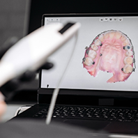
When our dentists or hygiene team scan your mouth, a small wand will be used to quickly and comfortably scan the inside of your mouth. As the wand passes over your teeth, the images captured will be processed simultaneously to provide an immediate, complete and highly accurate image of your mouth. The pictures are even saved automatically every few seconds, so there is no need for you to sit through a second scan.
Digital X-Rays
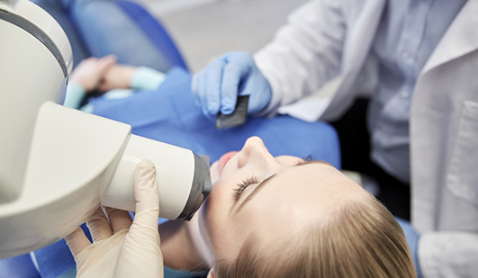
Digital X-rays are one of the advanced diagnostic tools we use to provide you with the best possible care. Digital radiography has changed the way we take dental X-rays by making the process faster, more comfortable and more convenient than ever before. They use a digital sensor to take images of your teeth, unlike traditional film X-rays.
Digital X-rays use significantly less radiation than conventional film X-rays and require the use of no chemicals for developing the images. Our dentists can then instantly view the high-quality images on monitors right in the treatment room to provide you with efficient, accurate diagnoses and care.
What Issues Can We See with Digital X-Rays?
Our team is able to use digital radiography to identify and diagnose several types of dental problems, such as:
- Decay between teeth
- Developmental abnormalities
- Improper tooth root positioning
- Cysts and abscesses
- Fractures in existing fillings
- Tumors
- Infection in the tooth nerves
- Bone loss
Soft Tissue Laser
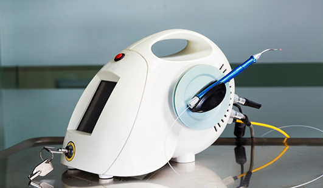
Utilizing our soft tissue laser, we can more comfortably and precisely remove damaged gum tissue to help treat gum disease as well as prepare a tooth for dental restoration. The concentrated beam of light allows not only kills harmful oral bacteria on-contact, but it also reduces post-operative bleeding and recovery times to provide our patients with an overall more comfortable procedure.
DIAGNOdent™ Cavity Detection System
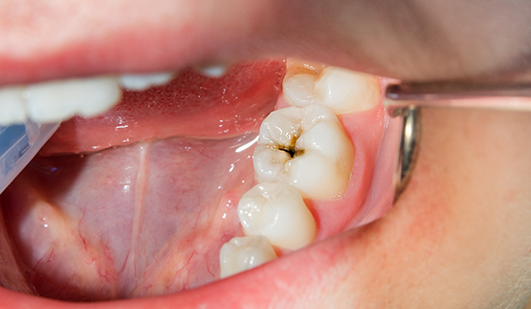
Our KaVo DIAGNOdent pen utilizes fluorescence technology to help us easily identify the early signs of decay at your routine dental checkups. This leads to the need for less invasive treatment by giving us the information to keep your oral health on the right track. With early diagnosis comes a healthier smile!
CEREC Same-Day Restorations
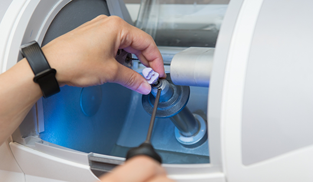
With CEREC one-visit restorations, you will have no need for uncomfortable temporary crowns, veneers or other restorations. In addition, CEREC uses advanced scanning technology to design the restoration, eliminating the need for messy impressions. CEREC one-visit restorations are created from high-quality porcelain that is matched to your individual tooth color, so your restorations will look beautiful and natural for years to come.
How CEREC Same-Day Restorations Work
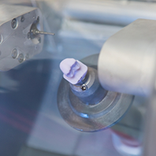
CEREC technology allows our team to provide you with a custom-made, high-quality dental restoration in a single visit to our office. Traditional dental techniques require at least two visits to complete many dental restorations; CEREC technology saves you time and discomfort by eliminating the need for a second visit. With CEREC technology, we can create many types of dental restorations in just one visit, including:
- Dental crowns
- Dental veneers
- Dental inlays and onlays
OralDNA® Testing
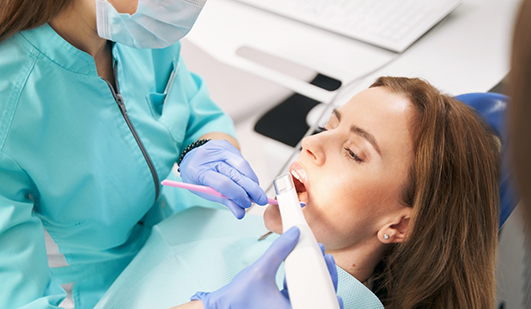
When our dentists and team need to diagnose a dental problem, we may perform OralDNA testing. This salivary diagnostic test will tell us exactly what type of bacteria are present in your mouth and allows our dentists to effectively treat a variety of dental issues. Using OralDNA testing, our dentists can predict your susceptibility to gum disease, tooth decay and other dental problems, and it can even help us provide treatment before harmful bacteria can cause permanent oral damage.
How Does OralDNA® Testing Work?
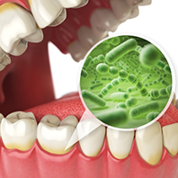
The procedure for OralDNA testing is simple. We provide a gentle rinsing procedure, in which you will swish a small amount of a sterile solution in your mouth for about 30 seconds. This sample will then be sent back to the OralDNA labs for testing. The lab will identify the type of bacteria found in your mouth, and the quantities in which they exist. This report will allow our dentists to develop a more effective treatment plan to meet your oral wellness needs.
VELscope® Oral Cancer Screening
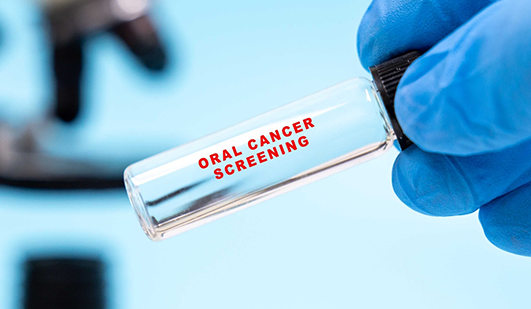
To catch oral cancer in the earliest stages, Lifetime Dental Care uses the VELscope oral cancer screening device. This cutting-edge technology can identify oral cancer before it becomes a problem, giving you a greater opportunity to treat the disease and recover your oral health.
About Us Meet the Dentists Meet the Team Tour Our Office Smile Gallery View Our Services